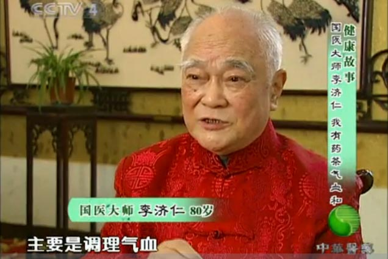
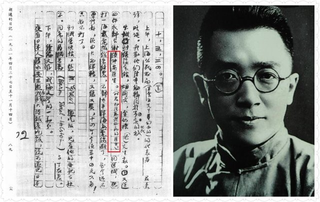
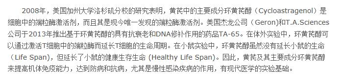
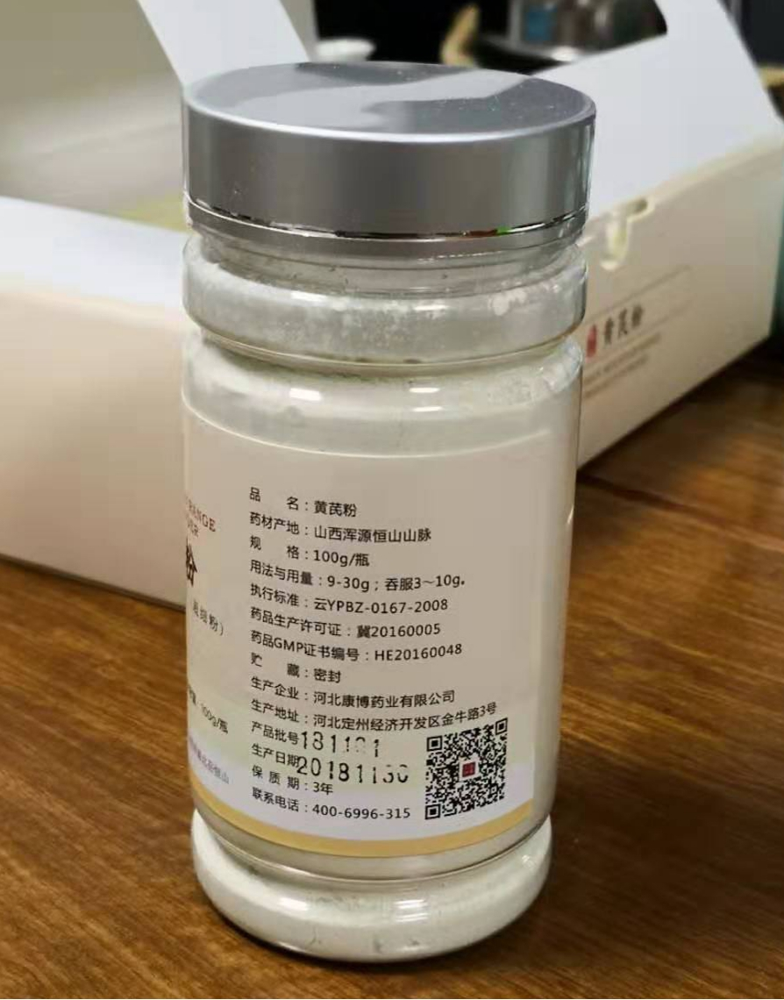
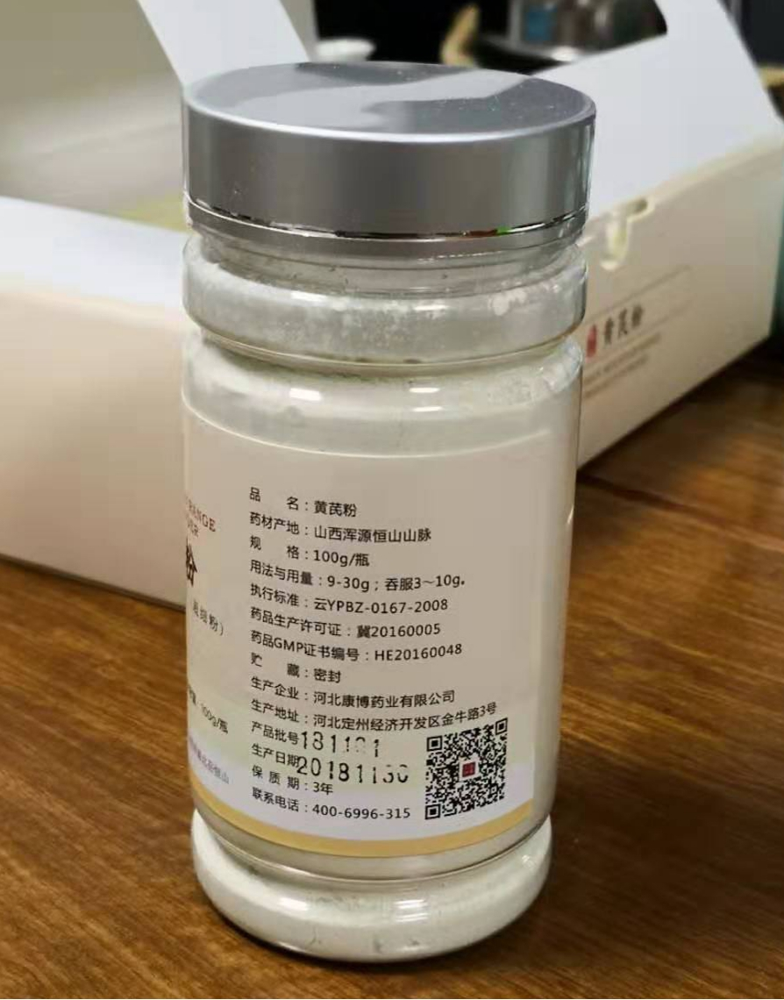
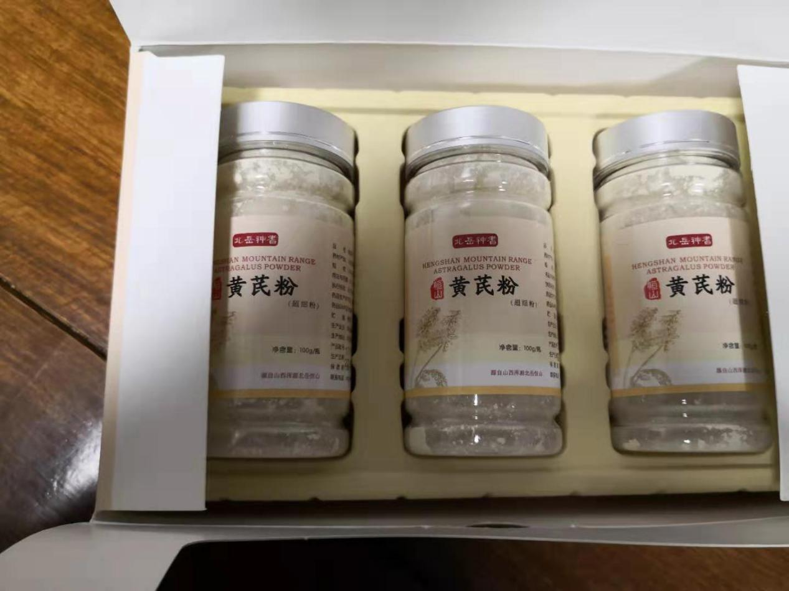
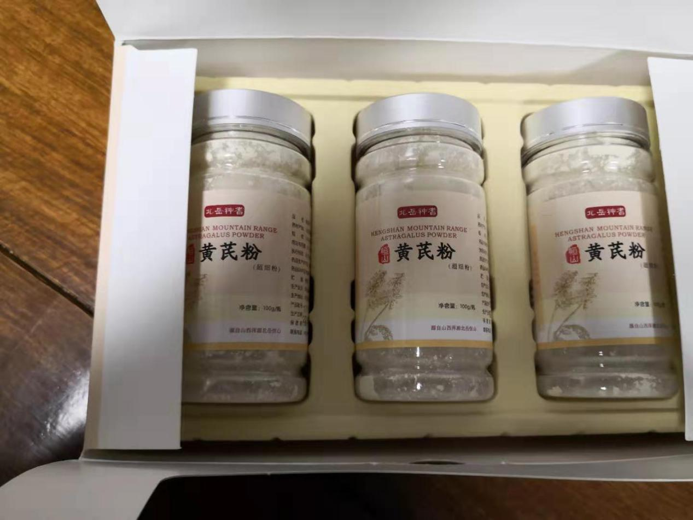

人活一口气，气虚百病生

形体消瘦、虚胖，面色苍白，身体疲倦、气短、懒得说话，动不动就出汗，着点凉就感冒、头晕目眩、失眠健忘、大便稀、小便频，免疫力差，经常生病，生了病后又不容易好——八九不离十，你是气虚体质！
气虚会引起五脏六腑功能失调、退化，最后发生各种疾病！
中医说的气，是人体最基本物质、也是五脏六腑各器官的功能。相当于现代医学的免疫力、免疫功能。
《皇帝内经》认为：“气”决定健康生死：正气内存，邪不可干，邪之所凑，其气必虚；
气壮则康，气衰则弱，气散则死；气行血行，气虚血虚，气滞血滞。
十人九虚
久虚必病,虚就要补
气血失调，高血压、糖尿病、心脑血管病、咳喘病、胃病、前列腺病等慢性病都会自然而来；
先天不足、长期饮食失调、生活不规律、精神压力大、久病不愈、疲劳过度、大病一场、刚做完手术、年老体弱都会导致气虚。
| # | 症状 |
|---|---|
| 肺气虚 | 咳嗽气喘、痰多、自汗盗汗、手脚冰凉、水肿、易感冒、鼻炎、肺炎、咽炎 |
| 肾气虚 | 腰膝酸软、疲倦乏力、头晕目眩、失眠健忘、尿急尿频，脱发白发、耳聋耳鸣、遗精早泄、前列腺炎、肾炎、白带清稀、月经淋漓 |
| 脾气虚 | 形体消瘦或虚胖、饮食减少，胃胀、胃酸、胃疼，倦怠乏力、大便溏薄，面色萎黄、胃溃疡、肠炎 |
| 心气虚 | 心悸、气短多汗、心慌胸闷、神疲体倦、心肌缺血、血糖高、血压高、血脂高、心肌缺血、心血管病 |
| 肝气虚 | 抑郁焦躁、面色青黄、口燥咽干、眼干眼花、萎黄、视物模糊、眼花、手脚麻木、胁下作痛、脑缺血、脑血管病、白内障 |
一个极度干旱寒冷的地方
为何几乎人人健康长寿？
——北岳恒山位于塞北高原、海拔2300米，这里常年干旱寒冷、不宜蔬菜、主粮生长，八、九十岁的老人却到处可见。


北岳恒山虽为道教名山，但老百姓生活环境却很艰苦


无论男女，八、九十岁下地干活、挑水、砍柴、种地都不在话下。
宁可三天不吃肉
不可一日无芪汤
——野生恒山黄芪是他们的天然补品，煲粥、炖汤、泡酒、泡茶每天都要吃一点


吃黄芪补气、长寿、不生病是当地百姓从古到今的共识
野生恒山黄芪为天下黄芪之宗
因稀有名贵被医家称为正北芪
——补气养血，降血压、降血糖、防治心脑血管病、保护胃黏膜、保护肝肾、抗氧化、抗衰老效果惊人！


国际动作影星成龙宣告无偿为恒山黄芪（正北芪）代言

北岳恒山北岳神耆品牌野生恒山黄芪基地负责人赵贵富
十药八芪，黄芪是一味补气行血的大药，《神农本草》列为“上品”、《本草纲目》称为“补药之长”，《本草求真》推为“补气诸药之最”，可补五脏六腑之气，行十二经络气血！

2015年12月10日央视CCTV4专题报道
——“恒山黄芪除了补气固表，还具有利尿、托毒，排脓的功效，在抗疲劳、降压、保肝、调节血糖方面也有很大疗效！”

野生恒山黄芪的功效明确载入国家药典
野生恒山黄芪补气升阳、固表止汗，利水消肿，生津养血、行滞通痹、托毒排脓、敛疮生肌的作用，对气虚、便溏、久泻脱肛、便血、自汗、水肿、血虚萎黄、半身不遂、手脚麻木、伤口愈合慢、慢性肾炎蛋白尿、糖尿病。
两位国医大师长寿之道
煲粥泡茶都不离正北芪

国医大师朱良春用正北芪水煮粥，每日一次——CCTV4《健康故事》
国医大师李济仁用正北芪泡茶调气血降压——CCTV4《健康故事》
宁用恒山野生北芪一两
不用旁地人工杂芪一斤
——古今名医用芪之道

央视CCTV4《名贵中药正北芪》专题片实地专访
正北芪，就是正宗的北岳恒山黄芪，《浑源县志记载》记载，1500多年前的北魏时期，就已在北岳恒山采黄芪入药。
宋朝以后，恒山黄芪被历代名医公认为正宗的道地黄芪，称为“正北芪”，清代则作为朝廷贡品。

民国时《药物出产辨》、《药物学备考》等中医名著，都将恒山正北芪视为“天下黄芪之正宗”，称恒山黄芪为“上等北芪，产量稀，立等见效”。
“宁用恒山野芪一两，不用旁地杂芪一斤”，是历代名医的用芪之道，恒山黄芪是国家三级保护植物、国家地理标志保护产品，国家地理标志保护商标，补气效果，普通黄芪历来不可相！
十两恒山黄芪
调好胡适的糖尿病肾病

胡适日记中提及自己服用恒山黄芪经历
民国时北大校长、大学问家胡适，曾患有糖尿病肾病，双腿浮肿，尿蛋白高，吃西药不见好，留过学，对中药不屑一顾，在国学大师马幼渔劝说下，找到京城名医陆仲安，用十两野生恒山黄芪（时称绵芪）做君药，几个月就给调好了！
附录：俞凤宾博士《记黄耆治愈糖尿病方药》一文云：”胡适之先生，患肾脏病，尿中含蛋白质，腿部肿痛，在京中延西医诊治无效，某西医告以同样之症。曾服中药而愈，乃延中医陆君处方，数月痊愈，处方如下：
西医俞凤宾博士曾收集陆仲安为胡适诊治的方药，刊登在当时的《中西医药杂志》上。
无论达官显贵，还是普通百姓
只要用过野生恒山黄芪
都会惊叹它神奇的功效
国外更有惊人的发现
美国科学家在野生恒山黄芪
甲苷中发现神秘抗衰老物质
———能激活细胞端粒酶、有望让人类“返老还童”!
2008年，英国《每日邮报》报道，美国加州大学教授埃弗罗斯，从来自中国恒山野生的黄芪甲苷中，发现了一种神奇的抗衰老物质环黄芪醇，这种天然抗衰老物质，能激活细胞端粒酶、增强细胞活力，有望让人类“返老还童”！

恒山黄芪甲苷中提取的环黄芪醇实物、分子式及相关专著
央视报道
野生恒山黄芪按根卖
每根上千块！


中央电视台CCTV4，2015年12月10日对恒山黄芪进行了长达15分钟的专题报道。
野生恒山黄芪为什么
补气养血、防治慢病、抗衰老效果这么好？
现代药理学研究发现，野生恒山黄芪含有100多种生物活性成分！40多种皂苷、30多种黄酮、9种多糖、15种氨基酸、14种微量元素。


各种成分之间既靶向作用，又协同作战
野生恒山黄芪主要功效成份
含量是国家标准的2.6~12倍

中国中医科学院、农业部参茸产品质检中心检测发现野生恒山黄芪中:
- 黄芪甲苷含量是普通黄芪的6倍
- 多糖含量是普通黄芪的12倍
- 毛蕊异黄酮是国家标准的2.6倍
- 硒含量是普通黄芪的9倍
上万份临床观察报告显示
已涉及100多种疾病的防治

百度搜索黄芪临床报告结果
野生恒山黄芪与
普通黄芪外观辨别

人工现挖正北芪

外观对比

切片对比

正北芪与普通黄芪对比
正宗的野生恒山正北芪，条长而顺，皮光色亮，粉性大，空心小，切开之后，切面就会呈现皮部黄白色,木部淡黄色,有放射状纹理,像菊花心一样，被香港、东南亚一带的药行称为“金盏银盘菊花心”。
老天爷划定的地方
北岳恒山也只有几个山头达标
——只有这种维度、海拔、土壤和气候，才能长出野生恒山黄芪！

野生恒山正北芪基地负责人赵贵富

cctv4《远方的家》专题报道
北岳恒山位于北纬37度，黄土高原和蒙古高原交接地带，海拔2300多米、昼夜温差16度，长年干旱、寒冷、少雨，特殊的花岗片麻岩质土壤富含有机质和微量元素，野生恒山黄芪生长8年以上才有利于黄芪皂苷、黄芪多糖、黄芪黄酮等药用成分和营养物质的转化和积累。
这也是野生恒山黄芪产量稀少，被认定为国家三级保护植物的原因。
野生恒山正北芪药用和滋补价值独特，产量稀少，是由三个特殊生态条件决定的：
一是寒冷的气候和巨大温差：8年以上才符合采挖标准，漫长的生长周期，有利于黄芪皂苷、黄芪多糖、黄芪黄酮等药用成分和营养物质的转化和积累；野生恒山正北芪生长在北岳恒山海拔1200米到1800米草甸区的阳坡地带，常年平均气温6.2度，平均昼夜温差16度，由于气候寒冷干旱，野生正北芪生长缓慢，8年以上才符合采挖标准，漫长的生长周期，有利于黄芪皂苷、黄芪多糖、黄芪黄酮等药用成分和营养物质的转化和积累；
二是高养分花岗片麻岩质粗骨性砂质土壤：微量元素和有机质丰富且利于吸收，黄芪甲苷、黄芪多糖、硒含量高于普通黄芪4、5倍。山西农科院土壤研究所分析结果显示：北岳恒山为花岗片麻岩质粗骨性砂质土壤，含有丰富的有机质和微量元素，有利于根系下扎长粗和吸收养分，土壤中有机质、氮、磷、钾、硒等微量元素含量全部为1级，这是野生恒山正北芪黄芪甲苷、黄芪多糖、硒含量高于普通黄芪4、5倍的原因。
三是无污染的空气：北岳恒山空气清洁度全年1级，光照强、无污染，保证了野生恒山正北芪纯天然、无残留的品质。
野生恒山黄芪
贵贱轻易买不到
全国黄芪需求量每年6.8万吨
野生恒山黄芪每年只有200来吨
占全国需求量的0.0012%！
其中120吨一直出口美、日、韩、东南亚及港台地区
20多吨用于药厂临床用药
剩下只有80来吨


百度结果显示野生恒山黄芪（正北芪）长期出口国外

恒山野生正北芪基地负责人赵贵富
让更多人受益的新办法
将野生恒山黄芪制成超细粉
——超微低温破壁粉碎技术粉碎成超细粉

野生恒山黄芪超细粉
采用低温超微破壁粉碎技术
能保持有效生物活性成分
吸收快
100%全面吸收
功效增强
没有一点浪费
扩大受益人群30倍以上


低温破壁吸收快、功效强、全面吸收不浪费
从采挖源头到出厂成品
严格按国家GMP标准把关


从采挖、筛选、加工、粉碎、野生恒山黄芪严格按照国家GMP标准生产
北岳神耆野生恒山黄芪超细粉
经药监局批准备案
功能主治严格执行国家药典标准
 

 

北岳神耆牌恒山黄芪超细粉
国家保护|院士推荐|誉满全球


国家质监局地理标志保护产品

国家商标局地理标证明商标

中国珍惜濒危植物，国家三级保护植物

恒山黄芪在联合国教科文组织国际合作与发展论坛备受关注

恒山黄芪基地成为首个国家黄芪标准示范基地

肖培根院士为山西浑源恒山黄芪题词

原中国红十字会会长华建敏为中国黄芪之乡浑源题词

北岳恒山主峰位于山西浑源，被认定为中国黄芪之乡
北岳神耆恒山黄芪基地公告
北岳神耆牌野生恒山超细粉首次限量供应
- 每天只供100人，每人限购四盒！
- 30天无理由退货！60天无效果退款！
- 拨打电话：4009907888
- 添加下面客服微信


购买微信：
阅读1.6万
好看127
.jpg)
曾经功成
395
恒山黄芪粉终于能买到啦，传说中的正北芪啊，好东西，有病治病没病防病！果断收藏！已经推荐给气血虚、糖尿病、高血压、心脑血管病的亲朋好友看了。
|作者
您识货，这是出口恒山黄芪首次向国内公开限量供应，请认准北岳神耆牌！
.jpg)
人生二维码
334
总是有人说好有人说不好吧，恒山黄芪几千年的名贵中药了，已经加了微信了，人家产量太少，想多买都不给的！
.jpg)
成功之父
456
楼上说的对，我是肾病，尿蛋白高，一高就吃恒山黄芪粉，量稍微大点的话，一天就降下去了，后来仔细研究，十药八芪，几乎每副中药都用到黄芪，是由道理的！
|作者
丽珠药业生产的参芪扶正液，用的也是恒山黄芪，用于肿瘤的！黄芪功效很多！
.jpg)
Ferdinand
334
我只想说老祖宗真不简单，我是胃溃疡，现在好多了，恒山黄芪能保护胃黏膜效果特别好！
|作者
先恭喜你了，另外提醒你一点，如果你坚持服用，还会有意外收获！
.jpg)
明天会更好
246
老实说我是个病秧子，每天无精打采的，我从小就生病多，人瘦的全是骨头，看西医说没事，看中医说我是典型气虚体质，年轻时也不太当回事，快四十了，看了这个介绍，就买了四盒北岳神耆恒山黄芪粉，现在用了两个月了，明显的感受，就是浑身有力气，有中医说的“升阳”的感觉，春节时，老婆感冒了，我都没有，哈哈哈，太高兴了！
.jpg)
嘻嘻哈哈
142
用了不到20天，晚上睡觉好多了，昨天居然一觉天亮，能遇到北岳神耆是我老汉的福分！
.jpg)
发光的金子
346
我是老糖友，双腿浮肿，下不去，和这个恒山黄芪粉，顶事儿，三个来月就不肿了，黄芪还有预防糖尿病并发症的功用，坚持，与病友共勉！
|作者
利水消肿效果，没的说，为您高兴！
.jpg)
太阳
521
看大家评论都挺不错，我也凑一句，刚用了几周，虚汗停了，原来动不动就冒汗！
.jpg)
雷诺
116
这个到底靠谱不啊！谁来告诉我，回家带点这个给我爸爸行不行啊？给个建议啊。
|作者
恒山黄芪已经有上千年历史了，这玩意儿的功效老祖宗早就验证过了，我刚生了娃，产后虚弱，管用
.jpg)
给自己一抹暖阳
249
恒山黄芪粉具有敛疮生肌的功效，我叔叔，40多岁了，锻炼腹肌肉，就吃这个，说是长肌肉，长肌肉！
.jpg)
!!!!
189
报告，我的恒山黄芪粉让我不拉稀了，以前胖，便便就没有整形的时候，稀稀拉拉的，真心话。
.jpg)
复合人生
316
我关注了北岳神耆恒山黄芪粉好久了，看到你们都有或多或少的变化了，我准备出手啦啦啦。
.jpg)
终结者
189
刚看到帖子还以为是假的，忍不住想吐槽，查了下，没错的，是真的，厉害，希望真的有效，我相信的是广大网友雪亮的眼睛
.jpg)
大牛
395
刚看到帖子还以为是假的，忍不住想吐槽，查了下，没错的，是真的，厉害，希望真的有效，我相信的是广大网友雪亮的眼睛
.jpg)
大牛
219
试过好多方法了，都不管用，纠结，算了先试试吧
.jpg)
百事顺意
224
划重点，本姑娘看中的就是美艳美颜，补气养血，气色好，比化妆品强太多了